User can select on a range of dropdowns on a specific category. In this case we are voting on a christmas. In the end, he can expect his own result and can compare against different voters.
Screenhots
Seeing all available votings and input the invite_code
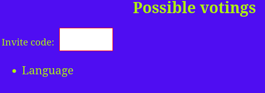Dropdowns on an christmas example
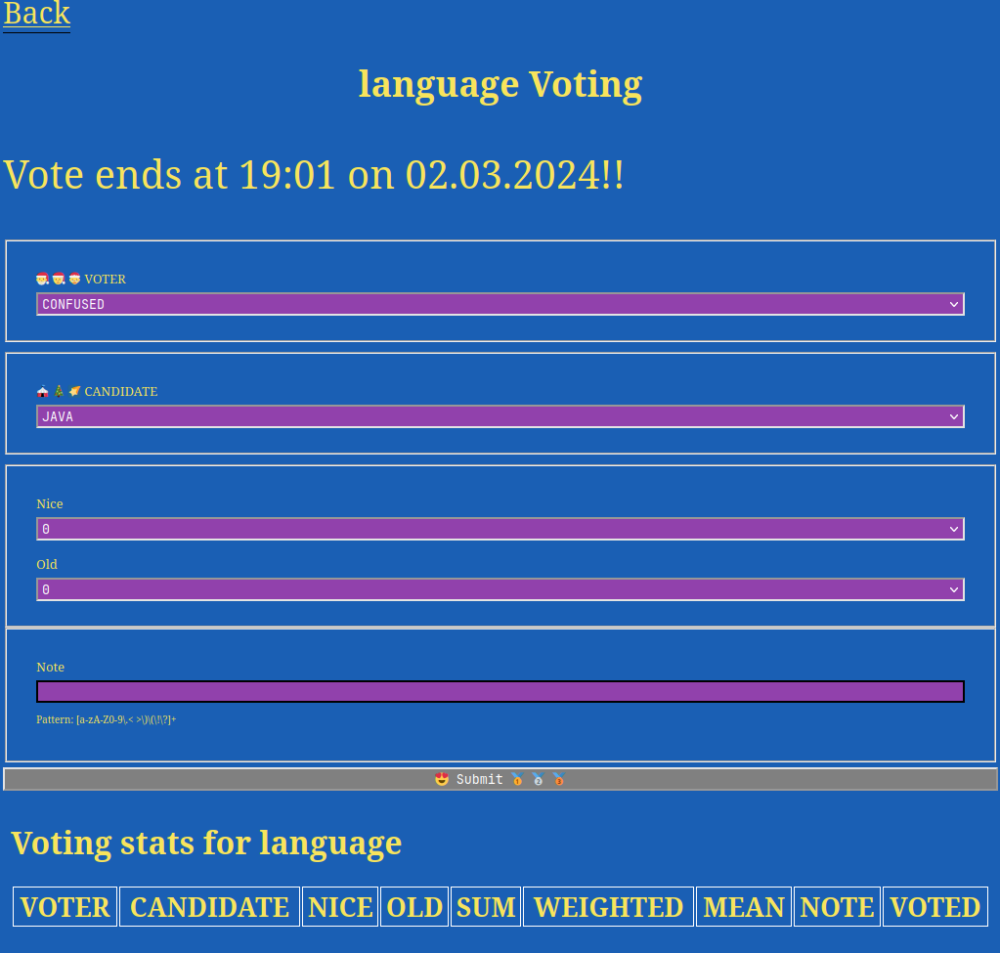User Result with sum and score. There are different tables and filters to get most out of the data.
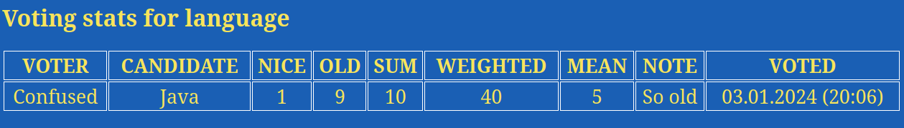Already available filtered votes are shown below
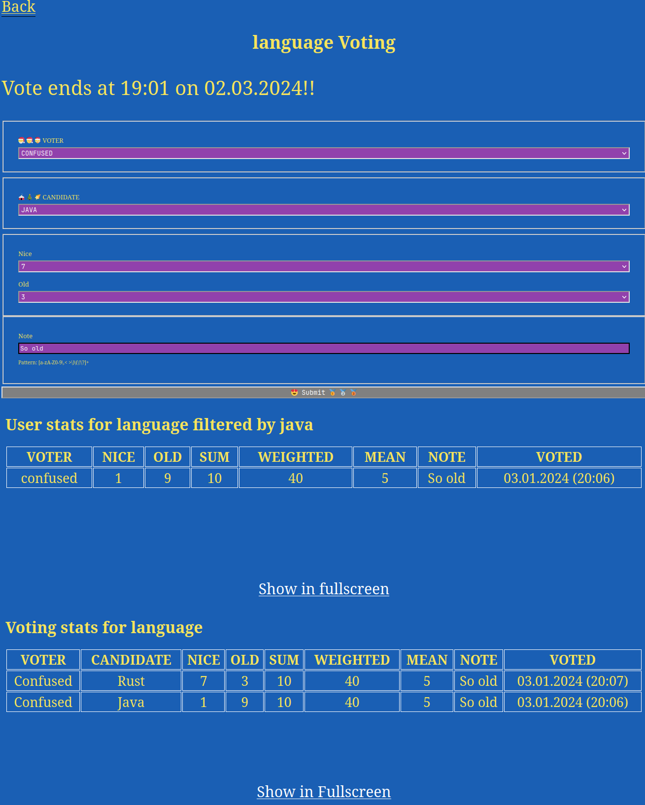Add user (A user is a voter or candidates) All user can vote if they have an invite_code and criterias
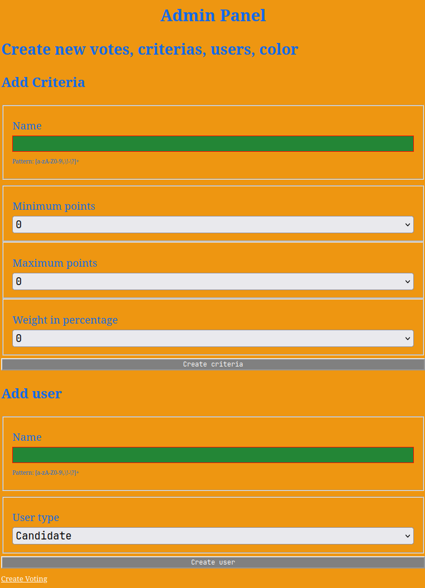Color selection for his own voting with preview section. Checkbox the criterias and candidates, which are available for the vote.
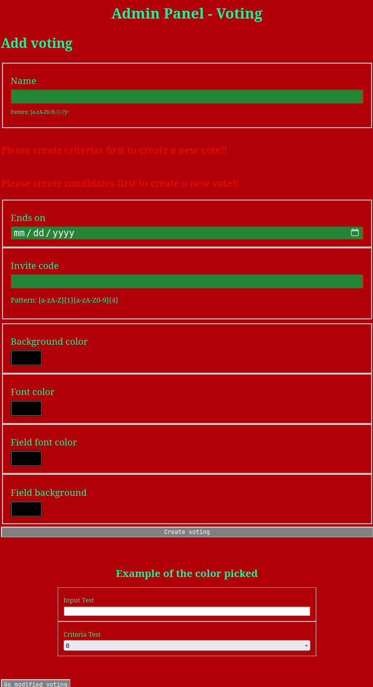 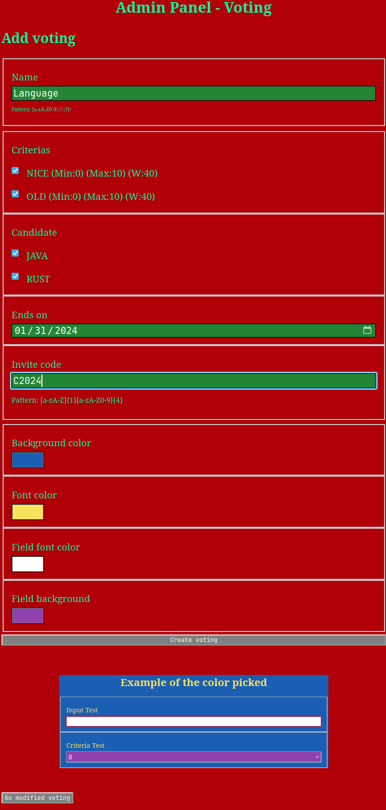Closing votes and accessing the created invite code in case you forgot
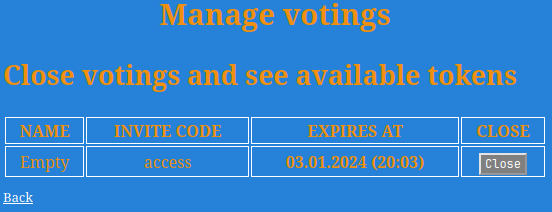Modify available categories and available candidates to vote on
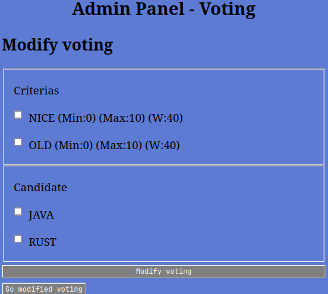Screenhots
Seeing all available votings and input the invite_code
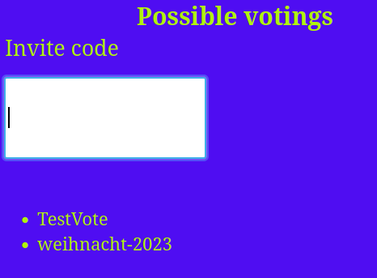Dropdowns on an christmas example
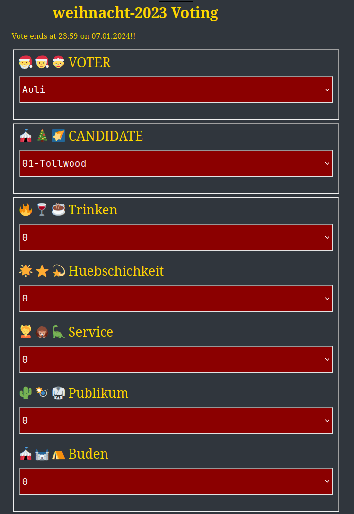User Result with sum and score. There are different tables and filters to get most out of the data.
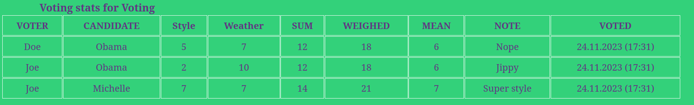Add user (A user is a voter or candidates) All user can vote if they have an invite_code
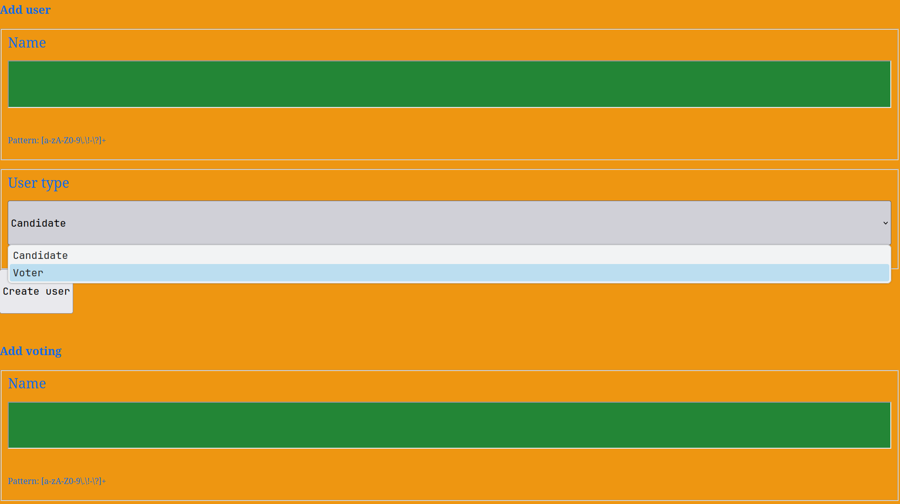Add criteria
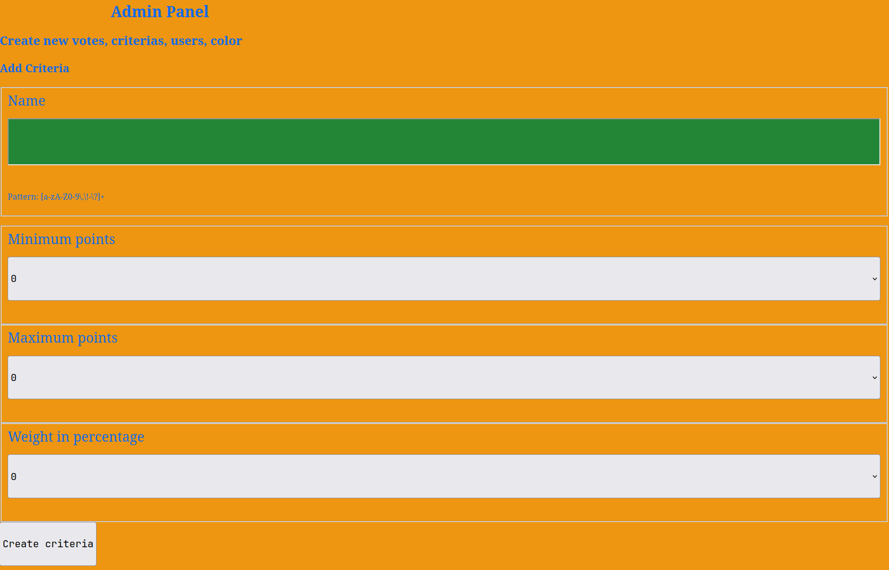Color selection for his own voting with preview section
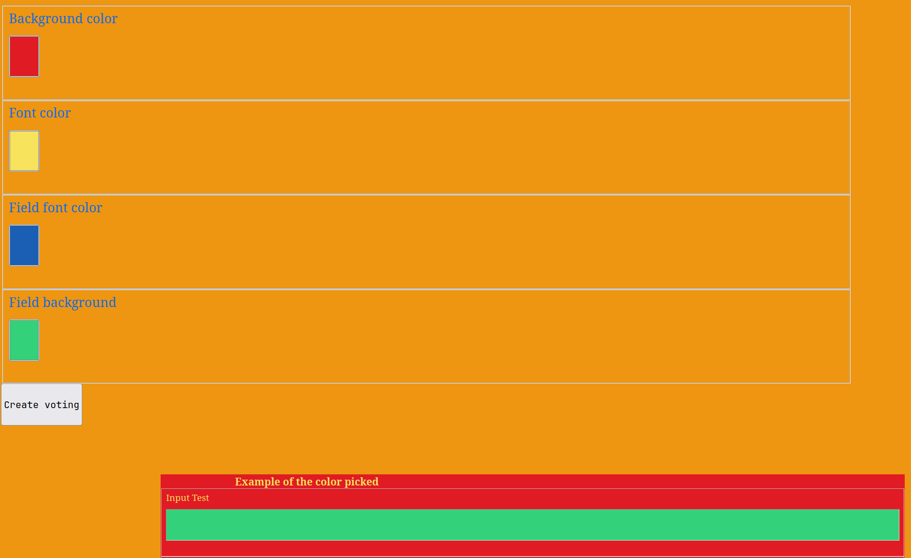Checkbox the criterias and candidates, which are available for the vote.
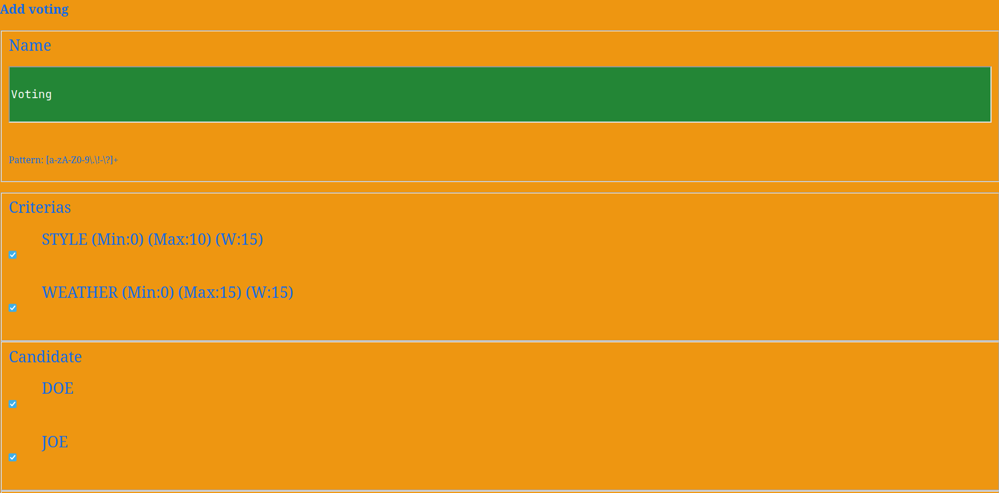Setting an end date and an invite code
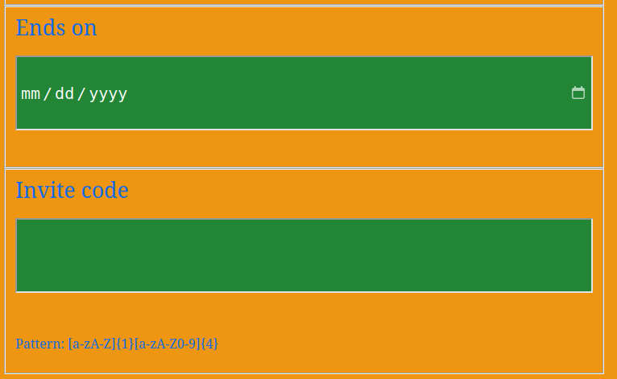Closing votes and accessing the created invite code in case you forgot
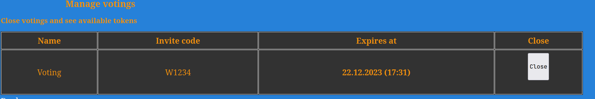Rust Cargo toml:
[dependencies]
rocket = { version = "0.5.0", features = [ "json"] }
tokio = { version = "1.31.0" , features = [ "fs" ] }
reqwest = { version = "0.11", features = [ "json" ] }
chrono = { version = "0.4.25", features = [ "serde" ] }
tracing = "0.1.40"
tracing-subscriber = "0.3.0"
regex = "1.10.2"
diesel = { version = "2", optional = true }
diesel_migrations = { version = "2", optional = true}
# log = "0.4.20" # used in rocket
# async_trait # used async_tarit
env_logger = "0.10.1" # binaries
futures = { version = "0.3.29" }
rocket_dyn_templates = { version = "0.1.0", features = ["tera"], optional = true }
sqlx = { version = "0.7.3", optional = true }
[dependencies.rocket_sync_db_pools]
version = "0.1.0"
features = ["diesel_sqlite_pool"]
optional = true
[dependencies.rocket_db_pools]
version = "0.1.0"
features = ["sqlx_sqlite"]
optional = true